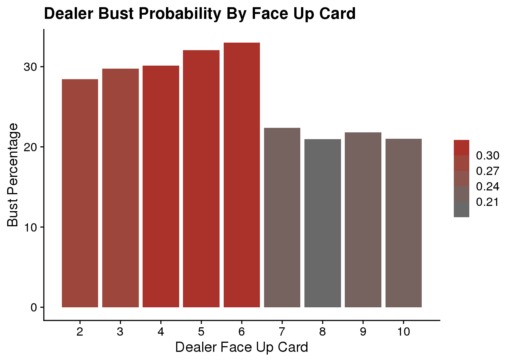

Introduction
Blackjack is known around the world as a timeless casino game. The rules are fairly simple, but the depth is shocking. Someone can play for years and still not have seen all the possibilities at a table. However, just like any other card game, basic probabilities can be calculated, and therefore an optimal strategy can be determined. In this analysis, I hope to showcase my data science skill by visualizing blackjack, and its infinite probabilities. Additionally, I hope to provide reasoning for why blackjack is played with a predetermined strategy.
Core Questions
- What is the expected value of a blackjack hand?
- How do the cards on the table influence the probability of a player winning?
- How can a player maximize their expected value?
dat1 <- read_csv("data/blkjckhands.csv") Exploratory Data Analysis
glimpse(dat1)## Observations: 898,078
## Variables: 21
## $ X1 <dbl> 0, 1, 2, 3, 4, 5, 0, 1, 2, 3, 4, 5, 0, 1, 2, 3, 4, 5, 0, …
## $ PlayerNo <chr> "Player1", "Player2", "Player3", "Player4", "Player5", "P…
## $ card1 <dbl> 7, 10, 9, 2, 10, 6, 10, 3, 10, 9, 10, 3, 10, 9, 5, 10, 2,…
## $ card2 <dbl> 10, 9, 8, 10, 2, 1, 4, 10, 2, 6, 4, 5, 2, 10, 1, 10, 9, 5…
## $ card3 <dbl> 0, 0, 0, 0, 0, 8, 0, 0, 0, 0, 0, 2, 0, 0, 10, 0, 1, 0, 0,…
## $ card4 <dbl> 0, 0, 0, 5, 5, 10, 0, 0, 0, 0, 0, 4, 0, 0, 0, 0, 0, 0, 5,…
## $ card5 <dbl> 0, 0, 0, 0, 0, 0, 0, 0, 0, 0, 0, 0, 0, 0, 0, 0, 0, 0, 0, …
## $ sumofcards <dbl> 17, 19, 17, 17, 17, 25, 14, 13, 12, 15, 14, 14, 12, 19, 1…
## $ dealcard1 <dbl> 10, 10, 10, 10, 10, 10, 4, 4, 4, 4, 4, 4, 4, 4, 4, 4, 4, …
## $ dealcard2 <dbl> 8, 8, 8, 8, 8, 8, 4, 4, 4, 4, 4, 4, 6, 6, 6, 6, 6, 6, 8, …
## $ dealcard3 <dbl> 0, 0, 0, 0, 0, 0, 5, 5, 5, 5, 5, 5, 6, 6, 6, 6, 6, 6, 0, …
## $ dealcard4 <dbl> 0, 0, 0, 0, 0, 0, 10, 10, 10, 10, 10, 10, 10, 10, 10, 10,…
## $ dealcard5 <dbl> 0, 0, 0, 0, 0, 0, 0, 0, 0, 0, 0, 0, 0, 0, 0, 0, 0, 0, 0, …
## $ sumofdeal <dbl> 18, 18, 18, 18, 18, 18, 23, 23, 23, 23, 23, 23, 26, 26, 2…
## $ blkjck <chr> "nowin", "nowin", "nowin", "nowin", "nowin", "nowin", "no…
## $ winloss <chr> "Loss", "Win", "Loss", "Loss", "Loss", "Loss", "Win", "Wi…
## $ plybustbeat <chr> "Beat", "Plwin", "Beat", "Beat", "Beat", "Bust", "DlBust"…
## $ dlbustbeat <chr> "Dlwin", "Beat", "Dlwin", "Dlwin", "Dlwin", "PlBust", "Bu…
## $ plwinamt <dbl> 0, 20, 0, 0, 0, 0, 20, 20, 20, 20, 20, 20, 20, 20, 20, 20…
## $ dlwinamt <dbl> 10, 0, 10, 10, 10, 10, 0, 0, 0, 0, 0, 0, 0, 0, 0, 0, 0, 0…
## $ ply2cardsum <dbl> 17, 19, 17, 12, 12, 7, 14, 13, 12, 15, 14, 8, 12, 19, 6, …For this project, I am examining a dataset that contains 90,000 blackjack hands with 6 players per hand. The data is stored in the blkjckhands.csv and it was downloaded from a repository on Kaggle that is linked below. The data consists of 898,078 observations of 21 variables. The variables X1 and PlayerNo describe the 6 players present in each hand, they are dbl numeric and a character string respectively. The variables: card1, card2, card3, card4, card5, dealcard1, dealcard2, dealcard3, dealcard4, and dealcard5 describe the numeric value of the card dealt. The number at the end of the variable name corresponds to which card was dealt first in the sequence. If no card is dealt 0 takes the place of NA. Variables sumofcards and sumofdeal are numeric values which total to the value of the cards dealt to each player and the dealer, per hand, respectively. Blkjck is a simple character string with two unique values nowin and win. Winloss describes each players outcome simplistically per hand. Character strings Loss and Win are the two options. Variables plybustbeat and dlbustbeat describe the hand outcome in more detail with unique values Beat, Plwin, Bust, DlBust, and Push for plybustbeat with Dlwin, Beat, PlBust, Bust, and Push for dlbustbeat. Each of these variables are of class character. Plwinamt and dlwinamt describe the hand outcome monetarily. These values are numeric and a base bet of $10 is assumed for each player each hand. The final variable play2cardsum is interesting. It describes the starting position from which players will make their decisions.
summary(dat1$ply2cardsum)## Min. 1st Qu. Median Mean 3rd Qu. Max. NA's
## 2.00 12.00 14.00 14.22 18.00 21.00 1ggplot(dat1, aes(ply2cardsum)) +
geom_bar() +
labs(title = "Frequency of Player Starting Hands",
x = "Player 2 Card Sum",
y = "Frequency") +
scale_x_discrete(limit = 2:21, breaks = 2:21)
summary(dat1$card1)## Min. 1st Qu. Median Mean 3rd Qu. Max.
## 1.000 5.000 8.000 7.126 10.000 11.000ggplot(dat1, aes(card1)) +
geom_bar() +
labs(title = "Frequency of Player Card 1",
x = "Player Card 1",
y = "Frequency") +
scale_x_discrete(limit = 1:11, breaks = 1:11)
summary(dat1$dealcard2)## Min. 1st Qu. Median Mean 3rd Qu. Max. NA's
## 1.00 5.00 8.00 7.13 10.00 11.00 1ggplot(dat1, aes(dealcard2)) +
geom_bar() +
labs(title = "Frequency of Dealer Card 2",
x = "Dealer Card 2",
y = "Frequency") +
scale_x_discrete(limit = 1:11, breaks = 1:11)summary(dat1$sumofdeal)## Min. 1st Qu. Median Mean 3rd Qu. Max. NA's
## 8.0 18.0 20.0 20.3 22.0 26.0 1ggplot(dat1, aes(sumofdeal)) +
geom_bar() +
labs(title = "Frequency of Dealer Card Sum",
x = "Dealer Card Sum",
y = "Frequency") +
scale_x_discrete(limits = 8:26, breaks = 8:26)summary(dat1$sumofcards)## Min. 1st Qu. Median Mean 3rd Qu. Max. NA's
## 8.0 17.0 19.0 18.9 21.0 26.0 1ggplot(dat1, aes(sumofcards)) +
geom_bar() +
labs(title = "Frequency of Player Card Sum",
x = "Player Card Sum",
y = "Frequency") +
scale_x_discrete(limits = 8:26, breaks = 8:26)## Warning: Continuous limits supplied to discrete scale.
## Did you mean `limits = factor(...)` or `scale_*_continuous()`?## Warning: Removed 1 rows containing non-finite values (stat_count).
summary(dat1$plwinamt)## Min. 1st Qu. Median Mean 3rd Qu. Max. NA's
## 0.000 0.000 10.000 9.723 20.000 25.000 1summary(dat1$dlwinamt)## Min. 1st Qu. Median Mean 3rd Qu. Max. NA's
## 0.000 0.000 0.000 4.776 10.000 10.000 1In a blackjack game, like the one being analyzed, each player receives two cards. Possible values range from 1-11 for each card, and 2-21 for the total hand value. The dealer is also dealt two cards, however one is face down. This forces the player to make a decision based on limited information. The player must choose to hit or stand.* All while playing against the dealer who has a hidden card. Another catch is that the dealer must stand on any 17. The object of the game is to beat the dealer by gaining a hand valued higher than theirs without exceeding 21. Above, I have calculated the summary statistics for important values. The values included will be the basis for my analysis.
*Other options that I won’t dive into for purposes of this analysis: double down, split.
Data Analysis
Question 1
What is the expected value of a blackjack hand?
Expected value is a very useful tool for determining the underlying value in a game or market. Blackjack is no different. To calculate expected value multiply the monetary win/loss by the chance that thing happens. Then add up all the individual values to determine your expected value for the game. Below I have calculated the expected value of this blackjack data.
# percent chance dealer bust
# percent chance of plwin
windat <- dat1 %>%
filter(plwinamt == 20) %>%
summarise(win_count = n())
totl_dat <- dat1 %>%
summarise(totl_count = n())
win_pct <- max(windat$win_count) / max(totl_dat$totl_count)
win_pct## [1] 0.3865822Above is the chance a player wins, without getting a blackjack.
# percent chance of plpush
pushdat <- dat1 %>%
filter(plwinamt == 10) %>%
summarise(push_count = n())
totl_dat <- dat1 %>%
summarise(totl_count = n())
push_pct <- max(pushdat$push_count) / max(totl_dat$totl_count)
push_pct## [1] 0.09360768The percent chance of a push is shown above.
# percent chance of plloss
lossdat <- dat1 %>%
filter(plwinamt == 0) %>%
summarise(loss_count = n())
totl_dat <- dat1 %>%
summarise(totl_count = n())
loss_pct <- max(lossdat$loss_count) / max(totl_dat$totl_count)
loss_pct## [1] 0.4775966The percent chance of a loss is shown above.
# pct chance of blackjack if win
blkjckdat <- dat1 %>%
filter(plwinamt == 25) %>%
summarise(blkjck_count = n())
blkjck_true_pct <- max(blkjckdat$blkjck_count) / max(totl_dat$totl_count)
blkjck_true_pct## [1] 0.04221237The chance a player wins, while also receiving a blackjack.
# calculate expected value
ex1 <- 15 * blkjck_true_pct
ex2 <- 10 * win_pct
ex3 <- -10 * loss_pct
ex4 <- 0 * push_pct
EV <- ex1 + ex2 +ex3 + ex4
EV## [1] -0.2769581By combining the probabilities listed, I calculated the true expected value of this blackjack game. The output represents what a player stands to lose on each hand on average. This is assuming the player bets $10 each time and blackjacks are payed out 3:2.
If we exclude the probability of a push the house edge can be easily calculated.
true_win_pct <- blkjck_true_pct + win_pct
house_edge_pct <- loss_pct - true_win_pct
house_edge_pct## [1] 0.048802This chunk calculates the house edge to be just under 5 percent. Which leads perfectly into my next question.
Question 2
How do the cards on the table influence the probability of a player winning?
# add sumofcards vs pct win/loss
x1 <- c(20, 25)
plhand_count <- dat1 %>%
group_by(ply2cardsum) %>%
summarise(count = n(), .groups = "keep")
plhand_win <- dat1 %>%
group_by(ply2cardsum) %>%
filter(plwinamt %in% x1) %>%
summarise(win_count = n(), .groups = "keep")
plwin_pct <- plhand_count %>%
left_join(plhand_win) %>%
summarise(percent_win = win_count / count, .groups = "keep")## Joining, by = "ply2cardsum"plot1 <- ggplot(plwin_pct, aes(ply2cardsum, percent_win * 100)) +
geom_bar(stat = "identity") +
labs(title = "Chance of Win vs. 2 Card Sum",
x = "Player 2 Card Sum",
y = "Player Win Percentage") +
scale_x_discrete(limits = (2:21), breaks = 1:21) +
geom_hline(yintercept = 50)## Warning: Continuous limits supplied to discrete scale.
## Did you mean `limits = factor(...)` or `scale_*_continuous()`?plot1## Warning: Removed 1 rows containing missing values (position_stack).Here we see that out of 19 possible 2 card sums the player is only favored to win in about 5 of the scenarios. The 19, 20, and 21 are self explanatory, however, the 10 and 11 are interesting. Your probability is good comparatively with the 10 and 11 because of the card value frequency explored in the EDA. A 10 is by far the most likely card to draw, therefore your chances of a high value hand are pretty good.
Now, the probability of winning based on the dealer’s up card.
dlhand_count <- dat1 %>%
group_by(dealcard2) %>%
summarise(count = n(), .groups = "keep")
glimpse(dlhand_count)## Observations: 12
## Variables: 2
## Groups: dealcard2 [12]
## $ dealcard2 <dbl> 1, 2, 3, 4, 5, 6, 7, 8, 9, 10, 11, NA
## $ count <int> 15474, 69984, 68370, 68730, 69120, 70188, 68694, 69258, 689…dlhand_win <- dat1 %>%
group_by(dealcard2) %>%
filter(plwinamt %in% x1) %>%
summarise(win_count = n(), .groups = "keep")
glimpse(dlhand_win)## Observations: 11
## Variables: 2
## Groups: dealcard2 [11]
## $ dealcard2 <dbl> 1, 2, 3, 4, 5, 6, 7, 8, 9, 10, 11
## $ win_count <int> 8861, 32306, 31662, 31556, 32349, 34617, 35063, 32840, 3055…dlcard_plwin_pct <- dlhand_count %>%
left_join(dlhand_win) %>%
summarise(percent_win = win_count / count)## Joining, by = "dealcard2"## `summarise()` ungrouping output (override with `.groups` argument)dlcard_plwin_pct## # A tibble: 12 x 2
## dealcard2 percent_win
## <dbl> <dbl>
## 1 1 0.573
## 2 2 0.462
## 3 3 0.463
## 4 4 0.459
## 5 5 0.468
## 6 6 0.493
## 7 7 0.510
## 8 8 0.474
## 9 9 0.443
## 10 10 0.382
## 11 11 0.184
## 12 NA NAplot2 <- ggplot(dlcard_plwin_pct, aes(dealcard2, percent_win * 100)) +
geom_bar(stat = "identity") +
labs(title = "Chance of Player Win vs. Dealer Up Card",
x = "Dealer Up Card",
y = "Player Win Percentage") +
scale_x_discrete(limits = 1:11, breaks = 1:11) +
geom_hline(yintercept = 50)## Warning: Continuous limits supplied to discrete scale.
## Did you mean `limits = factor(...)` or `scale_*_continuous()`?plot2## Warning: Removed 1 rows containing missing values (position_stack).
dlhand_win <- dat1 %>%
group_by(dealcard2) %>%
filter(dlwinamt == 10) %>%
summarise(win_count = n(), .groups = "keep")
glimpse(dlhand_win)## Observations: 11
## Variables: 2
## Groups: dealcard2 [11]
## $ dealcard2 <dbl> 1, 2, 3, 4, 5, 6, 7, 8, 9, 10, 11
## $ win_count <int> 5705, 32062, 31303, 32050, 31781, 30659, 27354, 29794, 3143…dlwin_pct <- dlhand_count %>%
left_join(dlhand_win) %>%
summarise(percent_win = win_count / count)## Joining, by = "dealcard2"## `summarise()` ungrouping output (override with `.groups` argument)plot3 <- ggplot(dlwin_pct, aes(dealcard2, percent_win *100)) +
geom_bar(stat = "identity") +
labs(title = "Chance of Dealer Win vs. Dealer Up Card",
x = "Dealer Up Card",
y = "Dealer Win Percentage") +
scale_x_discrete(limits = 1:11, breaks = 1:11) +
geom_hline(yintercept = 50)## Warning: Continuous limits supplied to discrete scale.
## Did you mean `limits = factor(...)` or `scale_*_continuous()`?plot3## Warning: Removed 1 rows containing missing values (position_stack).
# add sumofcards vs pct win/loss
x1 <- c(20, 25)
plhand_count_sum <- dat1 %>%
group_by(sumofcards) %>%
summarise(count = n(), .groups = "keep")
plhand_win_sum <- dat1 %>%
group_by(sumofcards) %>%
filter(plwinamt %in% x1) %>%
summarise(win_count = n(), .groups = "keep")
plwin_pct_sum <- plhand_count_sum %>%
left_join(plhand_win_sum) %>%
summarise(percent_win = win_count / count, .groups = "keep")## Joining, by = "sumofcards"plot133 <- ggplot(plwin_pct_sum, aes(sumofcards, percent_win * 100)) +
geom_bar(stat = "identity") +
labs(title = "Chance of Win vs. 2 Card Sum",
x = "Player 2 Card Sum",
y = "Player Win Percentage") +
scale_x_discrete(limits = (2:21), breaks = 1:21) +
geom_hline(yintercept = 50)## Warning: Continuous limits supplied to discrete scale.
## Did you mean `limits = factor(...)` or `scale_*_continuous()`?plot133## Warning: Removed 7 rows containing missing values (position_stack).x2 <- c(2, 3, 4, 5, 6, 7, 8, 9, 10)
dl_count <- dat1 %>%
group_by(dealcard2) %>%
summarise(count = n(), .groups = "keep")
dl_bust_sum <- dat1 %>%
group_by(dealcard2) %>%
filter(dlbustbeat == "Bust", dealcard2 %in% x2) %>%
summarise(bust_count = n(), .groups = "keep")
dl_bust_pct <- dl_bust_sum %>%
left_join(dl_count, by = "dealcard2") %>%
summarise(percent_win = bust_count / count, .groups = "keep")
plot134 <- ggplot(dl_bust_pct, aes(dealcard2, percent_win * 100, fill = percent_win)) +
geom_bar(stat = "identity") +
labs(title = "Dealer Bust Probability By Face Up Card", x = "Dealer Face Up Card", y = "Bust Percentage") +
scale_x_continuous(breaks = 2:10) +
theme(legend.title = element_blank())
plot134## Question 3
How can a player maximize their expected value?
#Determine hit or stand based on ply2cardsum
#determine hit or stand based on dealcard1
# combine the two, show chart of all possibilities
# ply2card sum (or possible hands) == rows and dealcard1 == colConclusion
I could answer this now, due to unfortuante experience. However, I will let the data explain itself.
TBC